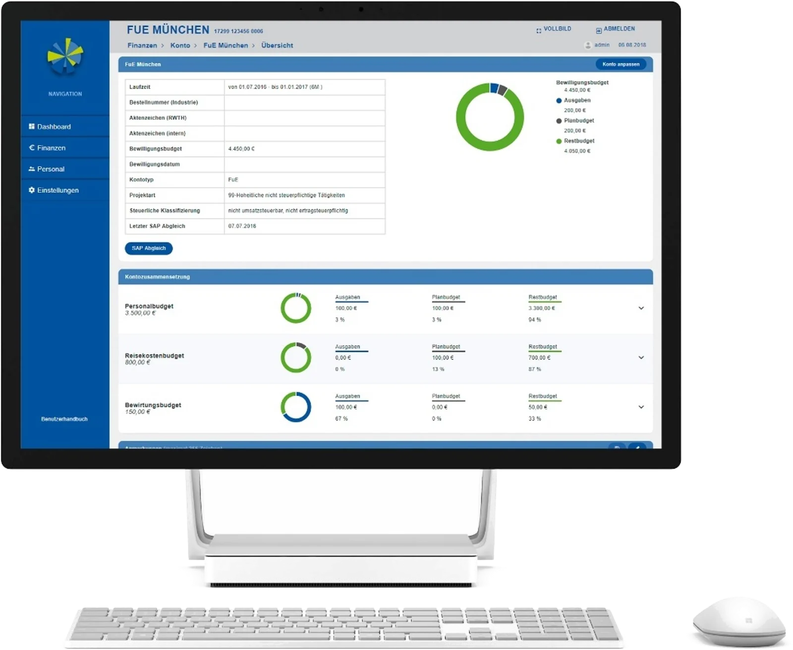

01MaCoCo
2018 — 2026Jeder Lehrstuhl verwaltet echtes Geld — Drittmittel, Verträge, Personal aus mehreren Projekten finanziert —, doch das ERP-System der Hochschule ist für die zentrale Verwaltung gebaut. MaCoCo gibt den Lehrstühlen ihr eigenes Cockpit, und der Großteil seines Codes wurde nie von Hand geschrieben.
- Rolle
- Projektleitung
- Partner
- Lehrstuhl für Controlling
- Status
- Produktiv an der RWTH
- Generiert
- ~ 3/4 des Codes

 ▶Video abspielen
▶Video abspielen
-
Das Problem
Als die RWTH ihre Verwaltung auf SAP umstellte, war das System für die zentralen Stellen gemacht — nicht für die rund 400 Lehrstühle und Institute, die jeweils eigene Budgets führen. Sie müssen wissen, wie viel Geld auf welchem Drittmittelprojekt übrig ist, welcher Vertrag aus welchem Projekt finanziert wird und ob die Stundenzettel des Projekts vollständig sind. Die meisten führten das in Tabellen oder Eigenbauten: fehleranfällig, einzelplatzfähig und für niemanden sonst sichtbar.
-
Das Cockpit
- Finanzen — Budgets, Einnahmen und Ausgaben über alle Konten und Projekte, mit geplanten Ausgaben und Prognosen.
- Personal — Stammdaten, Verträge und ihre Finanzierung; Personalkosten fließen automatisch in die Projekte, die sie tragen.
- Projekte — Stundenzettel für Geldgeber, die sie verlangen (mit begleitender Android-App), Besetzungsplanung und Organigramme.

Das Dashboard eines Lehrstuhls (Demodaten): Budget, Ausgaben, Planausgaben und die Konten, die Aufmerksamkeit brauchen. -
Aus Modellen gebaut
MaCoCo begann 2016 als handgeschriebener Prototyp. Schritt für Schritt ersetzte generierter Code ihn — zuerst Datenklassen und Persistenz, dann die Commands, die Validierung aus OCL-Constraints und schließlich das ganze Frontend aus GUI-Modellen. Der Generator, der dabei entstand, wurde zu MontiGem. Heute ist die Domäne in Klassendiagrammen und GUI-Modellen beschrieben; handgeschriebene Geschäftslogik wird dort eingehängt, wo sie nötig ist, ohne je vom Generator überschrieben zu werden.
~1.1 MZeilen Code74 %davon generiert~150Domänenklassen60GUI-Modelle -
Agil, mit den Nutzern
MaCoCo wird in einem Scrum-ähnlichen Zyklus gemeinsam mit Lead-Usern aus allen Fakultäten entwickelt. Ein Lenkungskreis — Datenschutz, Personalräte, Finanz- und Personalverwaltung, IT Center und Dekanate — tagt zweimal im Jahr, die Nutzer treffen sich monatlich. Kritische Korrekturen gehen sofort live, alles andere alle zwei bis drei Monate. Weil das System aus Modellen neu generiert wird, bleiben auch große Änderungen an der Domäne bezahlbar.
-
Im Einsatz
MaCoCo wird vom IT Center der RWTH betrieben und ist an SAP angebunden; jeder Lehrstuhl bekommt eine eigene Datenbank. Es wird an jedem Arbeitstag hochschulweit genutzt.
200+Lehrstühle & Institute~200Logins pro Arbeitstag2016in Entwicklung seit
- GLM+24
- Net24
- DGM+21
-
GMN+20
Continuous Transition from Model-Driven Prototype to Full-Size Real-World Enterprise Information SystemsA. Gerasimov, J. Michael, L. Netz, B. Rumpe, S. VargaAMCIS 2020, pp. 1–10
- AMN+20a
-
GHK+20
Generated Enterprise Information Systems: MDSE for Maintainable Co-Development of Frontend and BackendA. Gerasimov, P. Heuser, H. Ketteniß, P. Letmathe, J. Michael, L. Netz, B. Rumpe, S. VargaModellierung 2020 Companion, pp. 22–30
- ANV+18